Eight launcher icons, each drawn in the spirit of a different artist (original drawings, not copies of specific works). The small one is the real size on the Forerunner 165 (54×54 px) on black, which is what matters most.
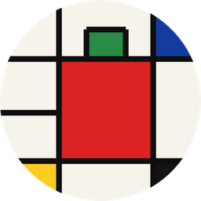
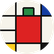
real sizeDe Stijl: primary color blocks on a black grid. The red block is the tomato.
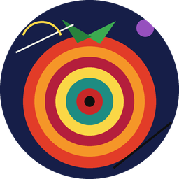
Concentric rings of color on deep blue, with floating geometric accents.
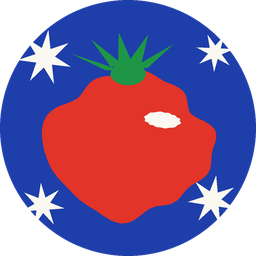
Paper cut-outs: a wobbly red tomato with leafy green on ultramarine.
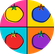
real sizePop-art silkscreen: four panels of the same tomato in clashing colors.
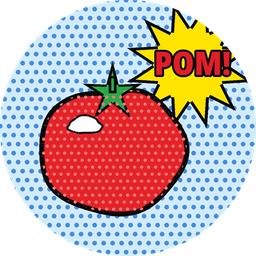
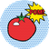
real sizeComic panel: Ben-Day dots, black ink outlines, a "POM!" burst.
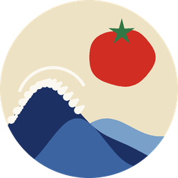
Ukiyo-e: an indigo wave with foam, the tomato rising like the sun.
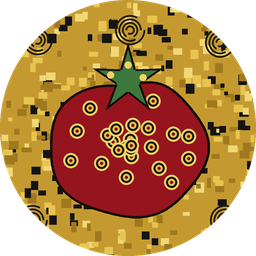
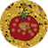
real sizeGolden mosaic, spirals and eye motifs; an ornamented, jewel-like tomato.
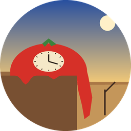
Surrealist: a tomato-clock melting over a ledge in a dreamlike desert.